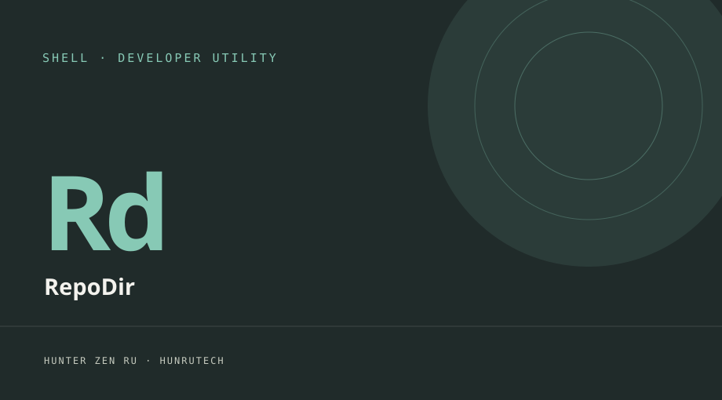

Shell · Developer utility · Available
RepoDir
A small repository helper script from the open-source toolbox, built for practical developer workflows.

About this project
- A shell utility maintained with the other developer scripts in this portfolio repository.
- See the source and usage notes on GitHub.